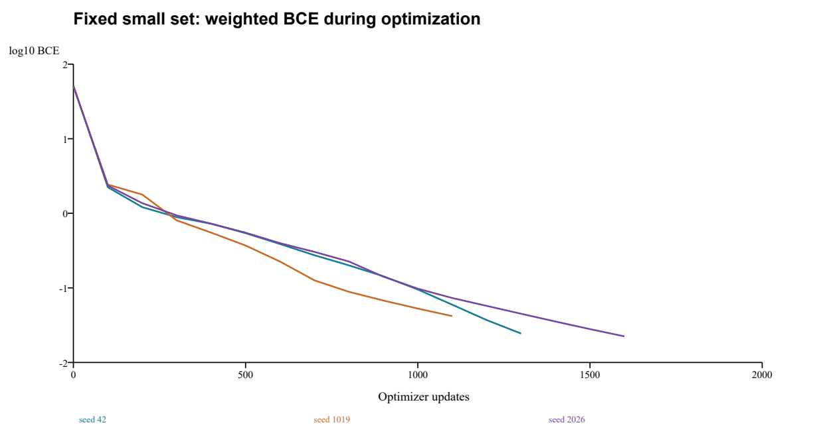
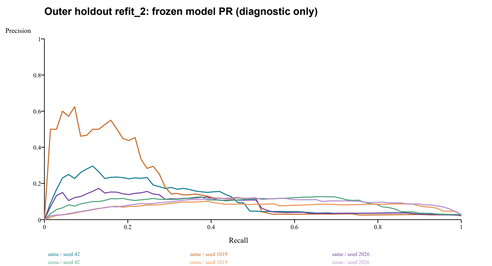
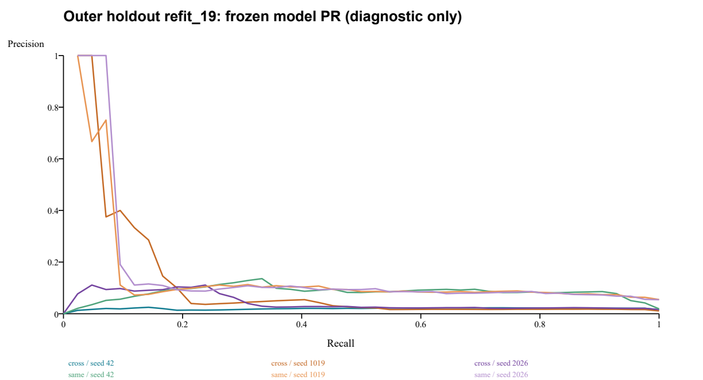
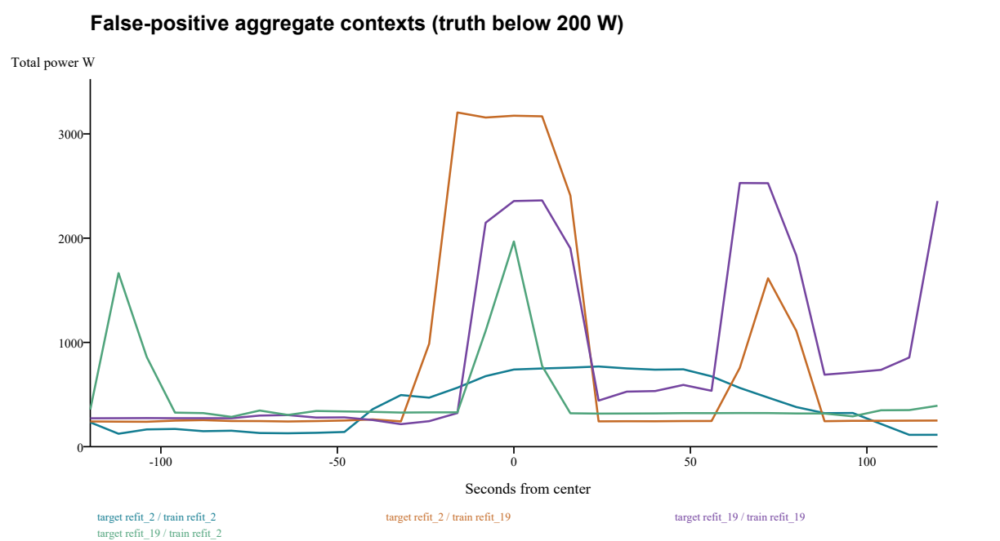

| 家庭 | 分区 | 有效窗 | 开机窗 | 阈值连续段 | 开机占比 | 有效小时 |
|---|---|---|---|---|---|---|
| refit_2 | train | 21317 | 166 | 19 | 0.779% | 47.37 |
| refit_2 | validation | 7962 | 59 | 7 | 0.741% | 17.69 |
| refit_2 | outer | 16325 | 69 | 8 | 0.423% | 36.28 |
| refit_19 | train | 25133 | 141 | 25 | 0.561% | 55.85 |
| refit_19 | validation | 9869 | 94 | 18 | 0.952% | 21.93 |
| refit_19 | outer | 20787 | 42 | 7 | 0.202% | 46.19 |
每户最早4个完整可用训练开机段，共8段66个正中心；按同户总表中心功率最近匹配66个易混淆关闭窗，按低功率且时间最近匹配66个易关闭窗，共198窗。清单含户、UTC中心、窗口标识、原始行、事件、真实功率及配对原因。负窗彼此可邻近相关，此集合不作为独立泛化样本。
沿用现有C31输入形式、历史来源log1p统计、两层CNN、Adam .001、BCE pos_weight50，固定全集合优化；阈值.5。开始三个种子TP均0、FN66，加权BCE约50–52；每100步检查。P/R≥.98、AP≥.99、BCE≤.1连续两次则停止，上限2000步。所有实际梯度与参数更新非零、输入有限，原API标签与独立时间映射逐点一致。
| 种子 | 更新数 | TP | FP | FN | TN | P | R | 加权BCE | 判据 |
|---|---|---|---|---|---|---|---|---|---|
| 42 | 1300 | 66 | 0 | 0 | 132 | 100.00% | 100.00% | 0.02442 | 通过 |
| 1019 | 1100 | 66 | 1 | 0 | 131 | 98.51% | 100.00% | 0.04184 | 通过 |
| 2026 | 1600 | 66 | 0 | 0 | 132 | 100.00% | 100.00% | 0.02238 | 通过 |

AP最终三者均为1。训练初始、每次检查、最终逐样本得分与正负分位数均保存。1019最终1个关闭窗仍过.5，但正样本排序完整领先负样本；符合预登记98%标准。小集合成功表明能在有限样本上学习，不能排除总体容量/特征表达不足、全量优化或稀疏正例采样问题。
6模型均从头训练、自然类别比例shuffle、训练块独立估计log1p统计；没有困难挖掘或新网络变体。内部验证以Recall≥.85的精确PR点选阈值，再按P/F1/较早轮次选检查点。外层标签物理分离，所有模型和阈值及12份预测封存后才统一评分。对同一目标户，同户/跨户使用完全相同的有效时间点与正类比例。以下均为3种子算术均值，不能视作3个独立家庭。末两列是各留出分区事后阈值的诊断上界，禁止部署或作为通过验收依据。
| 目标 | 训练来源 | P | R | F1 | AP | 冻结阈值FPR | 诊断P@R85 | 诊断FPR@R85 |
|---|---|---|---|---|---|---|---|---|
| refit_2 | 同户 | 10.66% | 38.65% | 15.60% | 12.20% | 2.14% | 3.44% | 10.70% |
| refit_2 | 跨户 | 9.74% | 52.17% | 16.30% | 8.61% | 2.14% | 7.48% | 5.07% |
| refit_19 | 同户 | 8.72% | 64.29% | 15.35% | 12.60% | 1.36% | 7.91% | 2.08% |
| refit_19 | 跨户 | 1.94% | 41.27% | 3.68% | 5.72% | 4.41% | 2.10% | 8.28% |


下表为每个训练户所选模型在训练重放、内部验证、同户外层上的均值。训练重放只检查拟合程度。即使独立放宽留出阈值达到85%召回，外层误报率仍明显高于训练及内部验证；AP也降低。因此仅重新校准阈值不能恢复原排序质量。
| 训练户 | 分区 | AP | 冻结阈值R | 诊断P@R85 | 诊断FPR@R85 |
|---|---|---|---|---|---|
| refit_2 | train | 65.91% | 86.95% | 44.61% | 0.85% |
| refit_2 | validation | 53.78% | 88.70% | 30.98% | 1.54% |
| refit_2 | same_house_outer | 12.20% | 38.65% | 3.44% | 10.70% |
| refit_19 | train | 62.41% | 92.43% | 59.74% | 0.34% |
| refit_19 | validation | 43.92% | 85.46% | 43.38% | 1.07% |
| refit_19 | same_house_outer | 12.60% | 64.29% | 7.91% | 2.08% |
事件命中指该阈值段至少一个有效开机中心被识别；不能代替逐点Recall或完整事件召回。连续分数完整PR存于evaluation/pr_*.npz，固定.5的全部计数与指标存于results.json的fixed_half。
| 训练户 | 目标户 | 种子 | P | R | F1 | AP | TP | FP | FN | TN | FPR | 阈值 | 段命中 |
|---|---|---|---|---|---|---|---|---|---|---|---|---|---|
| refit_2 | refit_2 | 42 | 14.94% | 37.68% | 21.40% | 11.17% | 26 | 148 | 43 | 16108 | 0.91% | 0.931317 | 5/8 |
| refit_2 | refit_19 | 42 | 1.38% | 23.81% | 2.61% | 2.01% | 10 | 715 | 32 | 20030 | 3.45% | 0.931317 | 3/7 |
| refit_2 | refit_2 | 1019 | 4.36% | 50.72% | 8.04% | 17.23% | 35 | 767 | 34 | 15489 | 4.72% | 0.558639 | 6/8 |
| refit_2 | refit_19 | 1019 | 1.61% | 52.38% | 3.13% | 10.78% | 22 | 1341 | 20 | 19404 | 6.46% | 0.558639 | 4/7 |
| refit_2 | refit_2 | 2026 | 12.67% | 27.54% | 17.35% | 8.20% | 19 | 131 | 50 | 16125 | 0.81% | 0.898748 | 4/8 |
| refit_2 | refit_19 | 2026 | 2.81% | 47.62% | 5.31% | 4.36% | 20 | 691 | 22 | 20054 | 3.33% | 0.898748 | 5/7 |
| refit_19 | refit_2 | 42 | 10.34% | 43.48% | 16.71% | 9.40% | 30 | 260 | 39 | 15996 | 1.60% | 0.820631 | 4/8 |
| refit_19 | refit_19 | 42 | 9.12% | 64.29% | 15.98% | 8.31% | 27 | 269 | 15 | 20476 | 1.30% | 0.820631 | 7/7 |
| refit_19 | refit_2 | 1019 | 7.44% | 55.07% | 13.10% | 7.48% | 38 | 473 | 31 | 15783 | 2.91% | 0.923772 | 7/8 |
| refit_19 | refit_19 | 1019 | 8.48% | 66.67% | 15.05% | 13.95% | 28 | 302 | 14 | 20443 | 1.46% | 0.923772 | 6/7 |
| refit_19 | refit_2 | 2026 | 11.43% | 57.97% | 19.09% | 8.95% | 40 | 310 | 29 | 15946 | 1.91% | 0.806654 | 6/8 |
| refit_19 | refit_19 | 2026 | 8.55% | 61.90% | 15.03% | 15.53% | 26 | 278 | 16 | 20467 | 1.34% | 0.806654 | 6/7 |
每模型3528次更新，批量上限256、末批可短；约89.5万窗口曝光。House2正例曝光6972次，House19约5017–5031次，窗口重复并非新事件。名义时长相同、更新预算相同，有效窗口/事件支持不同。House2约42次全训练集曝光，House19约35.6次；原C31来源全训练集约150069窗、646正窗、103段，3528步约6次曝光，因此不能将本轮与历史训练预算说成完全同等学习任务。
| 训练户 | 种子 | 更新数 | 实际窗口曝光 | 正窗曝光 | 选中检查点 | 拟合秒数 |
|---|---|---|---|---|---|---|
| refit_2 | 42 | 3528 | 895314 | 6972 | 11 | 8.77 |
| refit_2 | 1019 | 3528 | 895314 | 6972 | 9 | 8.02 |
| refit_2 | 2026 | 3528 | 895314 | 6972 | 12 | 9.80 |
| refit_19 | 42 | 3528 | 895783 | 5031 | 12 | 8.26 |
| refit_19 | 1019 | 3528 | 895783 | 5030 | 3 | 8.37 |
| refit_19 | 2026 | 3528 | 895783 | 5017 | 6 | 9.44 |
固定seed42，每个训练/目标组合选分数最高的误报，并在同一目标时间点查询另一来源模型分数。表内为“得分 / 各自冻结阈值”，真实微波炉功率均小于200W。窗口曲线是总有功功率；仅凭本图不能识别究竟是哪一种其他设备。
| 目标户 | 按哪个训练户排序 | UTC中心 | 真实W | 总表中心W | 同户得分/阈值 | 跨户得分/阈值 |
|---|---|---|---|---|---|---|
| refit_2 | refit_2 | 2014-10-11T16:43:44+00:00 | 0.0 | 740.0 | 0.998741 / 0.931317 | 0.014430 / 0.820631 |
| refit_2 | refit_19 | 2014-10-11T08:18:16+00:00 | 0.0 | 3174.2 | 0.457323 / 0.931317 | 0.999978 / 0.820631 |
| refit_19 | refit_19 | 2014-10-16T21:23:04+00:00 | 0.0 | 2355.9 | 0.999958 / 0.820631 | 0.734391 / 0.931317 |
| refit_19 | refit_2 | 2014-10-16T20:56:40+00:00 | 0.0 | 1968.0 | 0.991817 / 0.820631 | 0.998155 / 0.931317 |

完整逐窗31点功率、两个来源分数见paired_error_cases.json。所有模型另保留每类至多3个、相隔至少248秒的TP/FP/FN案例（evaluation/error_cases.json）。最高分样例是机制线索，不能代表全部误报频率，更不能直接当成下一轮训练集。
重新以旧C61权重对来源2/19的61点共同支持134673窗、559正中心推理，3种子的AP、P@R85、FPR@R85均与旧只读诊断JSON一致；重算训练P@R85均值17.37%、FPR1.71%。旧检查点历史的选中轮、末轮BCE和来源验证Precision也逐项一致。见docs/MICROWAVE_PRIOR_EVIDENCE_READBACK_20261025.json。原House5/17数字仅引用旧摘要，无新标签读取；旧开发P@R85约4.26%、FPR约5.5%仍是独立事后阈值诊断，不能部署。末轮训练损失下降而来源验证P下降的记录支持“不直接延长训练”。state-v2的PR读取缓存修复与模型训练不同，本轮没有因源码指纹不同而否定旧实验。
已支持：①原C31实现能优化固定小集合；②有效完整上下文使可用开机支持显著缩水，名义14天不能代替有效事件统计；③同户时间变化已足以造成大幅性能退化；④House19有额外跨户损失，House2没有一致同户优势；⑤冻结阈值漂移和排序质量退化都存在。
不能排除：更丰富负载组合下的特征/容量瓶颈、稀疏正例梯度与采样不足、单日内部验证不稳定、上游预处理造成的信息损失。不能把低精确率唯一归因于损失权重或跨户，也不能证明信号不可辨识。训练/内部验证选择和外层差异不是随机因果试验，无法量化每个原因占比。
下一轮最小建议：先只做来源数据的独立质量审计，定位House19前8天coverage=.875及碎片化缺失的生成原因，逐时核对原始采样、重采样规则、标签和总表时间戳，不填补缺失来凑训练样本；以“有效完整事件支持”决定能否建立至少多个日期块的内验证。若数据核对正确，再单独预登记一个“真正增加每批正事件曝光”的采样对照：同一C31、归一化、唯一正负清单、更新数和损失保持一致，仅改变批次正事件曝光，按事件/日期分块，冻结阈值后再看新的来源时间留出；必须明确正例有效权重随采样改变。不要同时增加网络或延长训练，不复用本轮外层反复选配方。本轮未执行该建议。
入口scripts/run_microwave_diagnosis.py支持prepare/audit/small/train/evaluate/verify。新运行目录必须不存在，已完成阶段或单模型目录拒绝覆盖。封存入口可在工作区日后变化时使用；当前verify已完成12份外层预测的权重读回，状态逐点一致。补充独立核验另重建72份内部验证PR与选择、12份外层混淆/AP、3小集合权重与成功判据、训练归一化、上下文和事件隔离，全部通过。这是本机自动复核，不是第二成员或第二机器复现。
```powershell
.venv-m2/Scripts/python.exe scripts/run_microwave_diagnosis_snapshot.py verify --run outputs/accuracy/microwave-diagnosis-20261025-v2
.venv-m2/Scripts/python.exe scripts/verify_microwave_diagnosis.py
.venv-m2/Scripts/python.exe -m unittest discover -s tests -p test_microwave_diagnosis.py -v
```
重跑依次prepare、audit、small、train、evaluate、verify，各命令指定同一个全新--run。源码/输入/模型/预测哈希分别位于registration.json、models/*/complete.json、freeze.json，评价封存位于evaluation_complete.json，交付总清单delivery_manifest.json。window_manifest.csv、small_manifest.csv、events.json、support.json提供划分与样本身份；source快照可检查没有外层选择路径。
训练早期误调用一次evaluate，由缺少freeze.json的门禁阻止，未创建评价目录、未解析外层标签；随后在训练进程退出、freeze.json存在后正式评价成功。v1准备失败和该门禁日志保留。无额外拟合、无留出后搜索。必要测试5项和已有状态实验回归9项全部通过，共14项。交付复核时发现注册封存入口的目录定位错误，直接启动会在导入项目代码前失败。原封存入口未改写；新增scripts/run_microwave_diagnosis_snapshot.py只定位并加载登记源码以verify，修复副本和哈希收据存于execution_repair/，12份预测读回已通过。当前工作区入口亦修正了未来封存目录定位，不改变本轮训练源码。